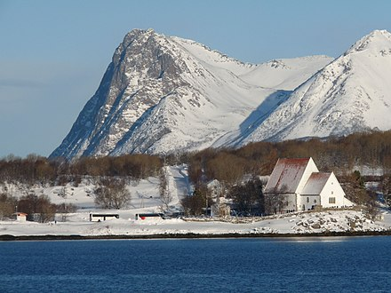

Ханс По́ульсен Э́геде (дат. Hans Poulsen Egede, лат. Johannes Pauli Quercetanus; 31 января 1686, Харстад — 5 ноября 1758, Фальстер) — датско-норвежский лютеранский миссионер, апостол Гренландии.
Ханс Эгеде происходил из рода датских священников; его отец служил чиновником, мать была дочерью норвежского купца, родился он на территории Норвегии. После окончания Копенгагенского университета и рукоположения служил на Лофотенских островах, где из-за бескомпромиссности пережил несколько конфликтов с местными жителями. В 1711 году впервые испросил королевского дозволения на поиски затерянных в Гренландии колоний и воссоздания там христианской миссии. Для финансирования предприятия Эгеде основал Бергенскую гренландскую компанию, которая осуществила первую экспедицию в Гренландию в 1721 году. Была основана колония на острове Надежды (недалеко от современного Нуука), которая не принесла коммерческой прибыли и существовала в трудных условиях. В 1723 году Эгеде обнаружил руины древнего Восточного поселения, а в следующем году провёл первое крещение эскимосов. В 1728 году колония была перенесена на материковый берег и получила имя Готхоб («Добрая надежда»). После эпидемии оспы и смерти жены, в 1736 году Эгеде вернулся в Данию, оставив начальствовать в Готхобе одного из своих сыновей — Пауля. Больше на остров он не возвращался, в 1739 году вторично женился. В Копенгагене Ханс Эгеде возглавил Гренландскую миссионерскую семинарию (Seminarium Groenlandicum), в 1741 году удостоился звания суперинтенданта Гренландской миссии. В 1744 году на гренландский язык было переведено Четвероевангелие, и в 1747 году утверждён катехизис. В том же году Ханс Эгеде подал в отставку и оставшиеся годы жизни провёл в семье дочери.
С точки зрения богословия, Эгеде отстаивал консервативную лютеранскую доктрину христианской монархии, в которой священник имел также функции представителя власти. С моральной точки зрения он находился под воздействием пиетизма. Последнее не мешало Хансу Эгеде практиковать алхимию, в том числе в период пребывания в Гренландии. Эгеде опубликовал два капитальных труда: «Новая перлюстрация старой Гренландии» (она же «Естественная история Гренландии», 1741)[Комм. 1] и «Обстоятельные и подробные сообщения о начале и продолжении Гренландской миссии» (1738), переведённых на ряд европейских языков.
После кончины Эгеде его сын Нильс[англ.] основал новый город Эгедесминде («Память Эгеде»). В честь Ханса Эгеде в 1916 года была учреждена медаль[англ.] Королевского Датского географического общества. Также в честь миссионера назван лунный кратер, памятники ему установлены в Гренландии, Дании и Норвегии. Евангелическая лютеранская церковь почитает его память 5 ноября[2].
 Генеалогию семейства Эгеде по мужской линии можно проследить до последнего десятилетия XVI века: дед будущего миссионера Ханс Йенсен Колинг родился в 1596 году и с 1629 года служил пастором в городе Вестер Эгеде в Зеландии. После его кончины в 1659 году осталось пять сыновей, из которых Пауль Хансен был самым младшим. Как было принято в те времена, новоназначенный пастор женился на вдове своего предшественника, но Пауль не пожелал оставаться в доме отчима. Неизвестно, когда и по какой причине он обосновался в Нурланне, за Полярным кругом, и поступил в услужение к харстадскому магистрату и купцу Йенсу Хинду. В Норвегии он именовался Эгеде, в честь малой родины; в латинской форме, принятой у образованных скандинавов, фамилия писалась Quercetanus. Женившись на дочери Хинда Кристен, он стал преемником на посту магистрата Харстада. Пауль Эгеде в браке имел пятерых детей, из которых Ханс был вторым ребёнком и перворождённым сыном. Крестили его в церкви Тренденеса в паре миль от города. Несмотря на полярное расположение, остров Хиннёйа, где находится Харстад, пригоден для земледелия и располагал лесными угодьями. Однако жалованье магистрата было невелико, и семейство Эгеде зарабатывало ловлей сельди. Пауль, вероятно, не имел законченого образования, но стремился, чтобы его дети поднялись по социальной лестнице. Ханс обучался на дому у дяди-священника Петера Хинда из Тронденеса, а затем священника из Хаммарёя Нильса Скильдерупа. Более о ранних годах его жизни не известно почти ничего. 18 июля 1704 года Ханс поступил в Копенгагенский университет, в документах которого именовался по-латыни Johannes Qvercetanus, и уже через год удостоился степени бакалавра теологии, хотя и с посредственными оценками. Несмотря на краткость пребывания в датской столице (восемнадцать месяцев), Эгеде, вероятно, завёл знакомства среди влиятельных придворных клириков, а также заинтересовался доктриной пиетизма, центром распространения которой был университет Галле в Германии[3][4]. Помимо гуманитарных дисциплин, Ханса Эгеде привлекали алхимия и геология, а на малой родине он приобрёл навыки картографа и геодезиста, также он хорошо рисовал. Нет никаких свидетельств, что юный Ханс стремился к миссионерской деятельности. Из недостатков его характера выделялась склонность к внезапным и сильным вспышкам гнева, впрочем, нередким у тогдашнего лютеранского духовенства[5].
Вскоре после возвращения Ханса в Харстад 21 апреля 1706 года скончался его отец. Старшая сестра Кирстен была к тому времени замужем за священником Торстейном Хансеном, младший брат Ганс в завещании назван студентом. Из завещания следует, что семья владела столовым серебром (две кружки, три стакана, три кубка и 15 ложек) на сумму 113 риксдалеров, домашней посудой и утварью из олова, меди и латуни на 50 риксдалеров, а также бельём, подушками, скатертями и прочим на 107 риксдалеров. Прочее движимое имущество было оценено в 136, скот в 76, и две рыболовных парусных шлюпки в 238 риксдалеров, всего 1106. Однако Эгеде-старший оставил долгов на 1401 риксдалер, выплата которых падала на старшего сына. Ханс тогда нашёл благодетеля — епископа Тронхейма Педера Крога, который имел права выделения бенефициев. 25 мая 1707 года 21-летний Ханс Эгеде был назначен приходским священником в Троннес, а через месяц получил вакантный приход Вогена, охватывающего рыбачьи деревни вокруг крупнейшей гавани на Лофотенах. Он немедленно был рукоположен, для чего ему следовало вступить в брак. Здесь возник небольшой скандал, так как он отказался жениться на вдове своего предшественника, Доротее де Фине (весьма состоятельной женщине), и вступил в брак с Гертрудой — дочерью Нильса Раска, крестьянина и управляющего имением из Вебестада. Она была тринадцатью годами старше своего мужа и бесприданницей, но при этом Ханс задолжал её покойному отцу 21 риксдалер. У супругов было четверо детей: сыновья Пауль (1709—1789) и Нильс (1710—1782), дочери Кристина Маттеа (1715—1786) и Петронелла (1716—1805)[6][7].